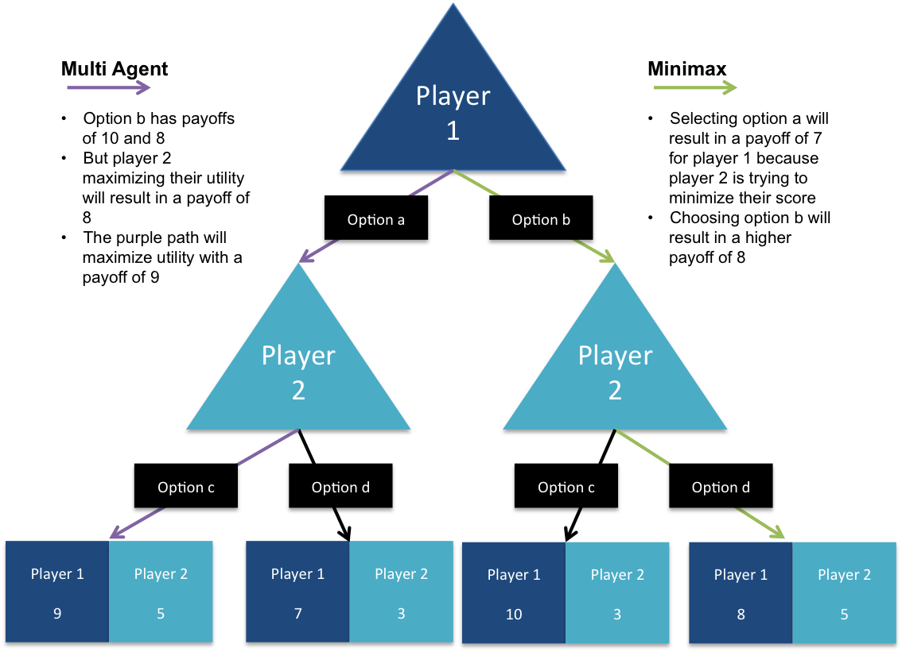
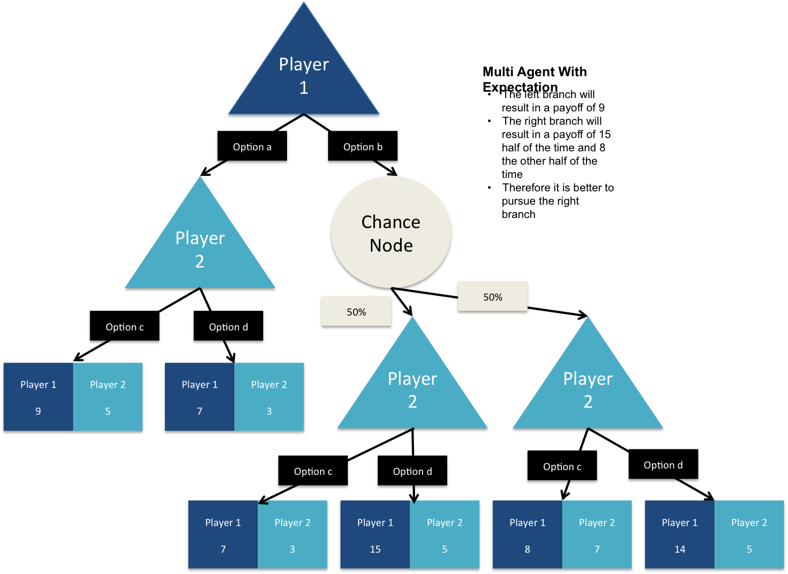

Robot Opponent¶
There is a body of game theory algorithms that focuses on different types of games. These include expectimax, expetiminimax and others. They all center around the idea that a game revolves around a tree of decisions with each player having their own ambitions.
Multi Agent Utility¶
The multi agent utility algorithm assumes that each agent within a game is attempting to maximize their own utility within the game. The robot player assumes that each player is rational and their selection will maximize utility. The robot iterates through all possible options and builds a tree for each option to understand the payoff for that option, assuming that the opponent is a utility maximizer. The view below describes this
Adding randomness¶
The option of rolling the dice to move the camels adds uncertainty to the game. No longer can the robot can guarantee payoffs assuming that opponents are playing optimally. To account for this the robot calculates an expectation for the payoff by weighing all outcomes from the random event.
Tree Depth¶
Each turn a given player has numerous moves that they can potentially make. In game theory this is called a high branching factor. This will result in a high number of nodes as your tree will grow very wide. Additionally when the camel’s are at the start of the game the tree will grow very high because it will take many moves to reach the end of the games. The way that we have adjusted for the computational complexity associated with such a large tree is by fixing the depth to 2 layers. Because the end of the game and final payoff is unlikely to be in the 2 layer tree, we have created a utility function to estimate the value of a players current position.
Utility Function¶
The utility is calculated as follows:
Utility = coins + E(tiles) + E(roundbets) + E(gamebets)
But how do we the expectation for round bet, game bet and tile value? Then answer is Monte Carlo simulation. The program plays out the end of the game and end of the turn 400 times and then takes the average payoffs from those simulations. 400 iterations was chosen because the expectation converges at that point for the most complex camel scenarios (e.g. when they are all bunched together with tiles in front of them).
Pruning¶
We use depth to reduce the height of our tree. But also use pruning to eliminate moves that simply don’t make sense. The following heuristics are applied:
Don’t place a tile more than 3 spaces in front of the camel in first place
Take the top 3 likely camels to win the round based on the monte carlo simulation
Take the top 2 likely camels to win the game based on the monte carlo simulation
Take the top 2 likely camels to lose the game based on the monte carlo simulation
Caching¶
A lot of the same moves result in the same positions on the board. For example, if a player a bet tiles, the chances that a camel comes in first for the round doesn’t change. For this reason we cache the results of the monte carlo simulation. If the exact same board placement arises in a future branch, those monte carlo expectations are reused to save on computation.